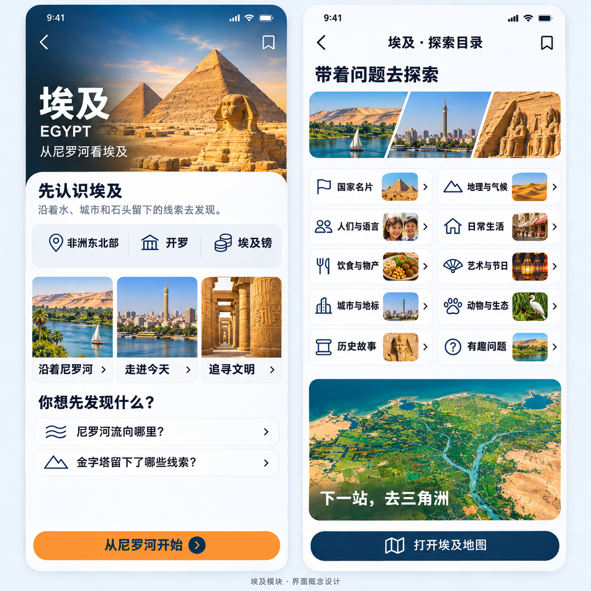
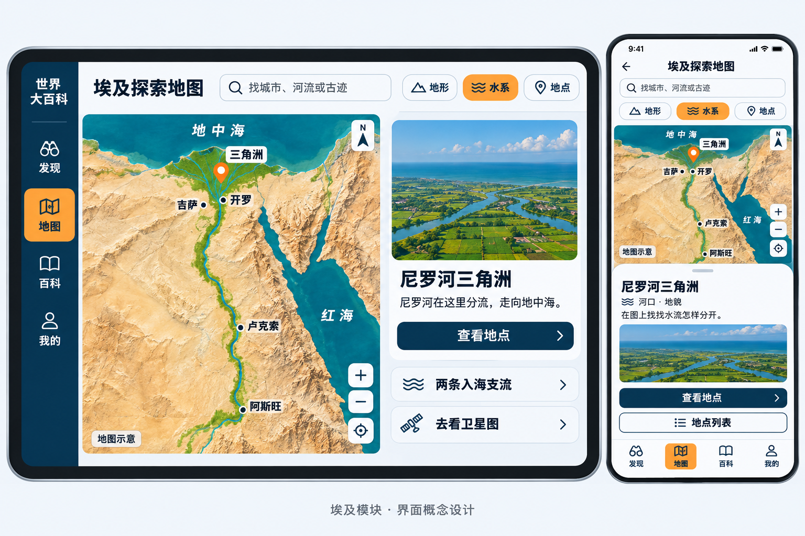
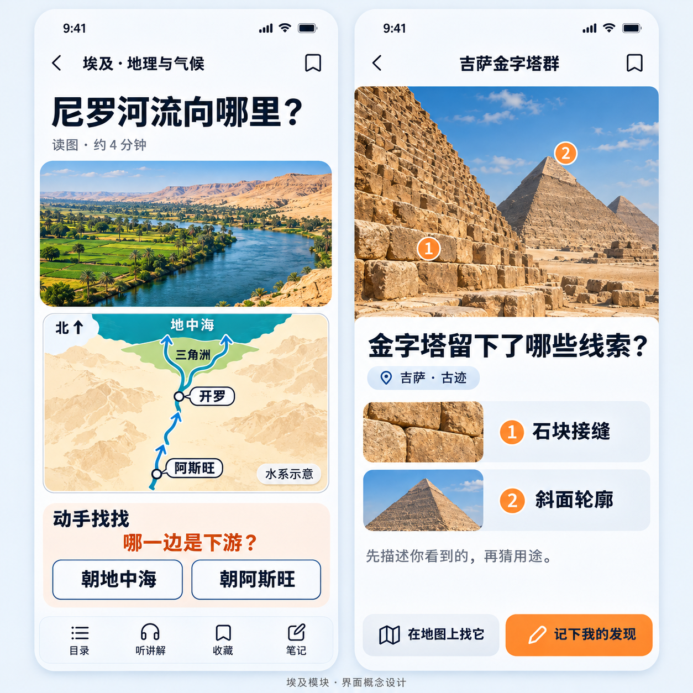
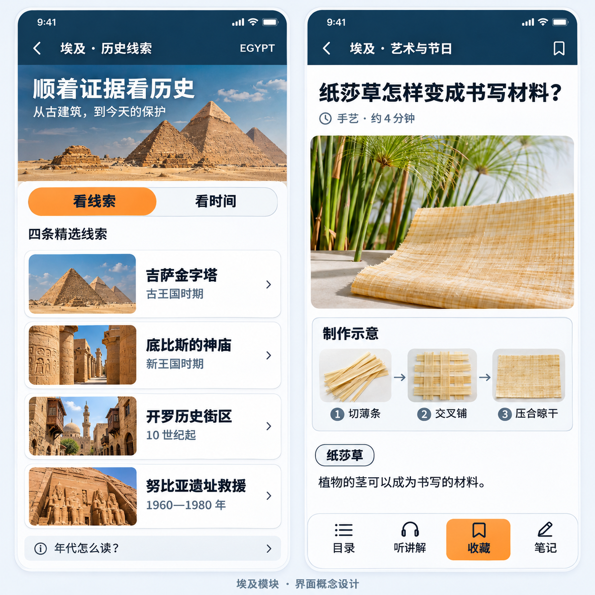
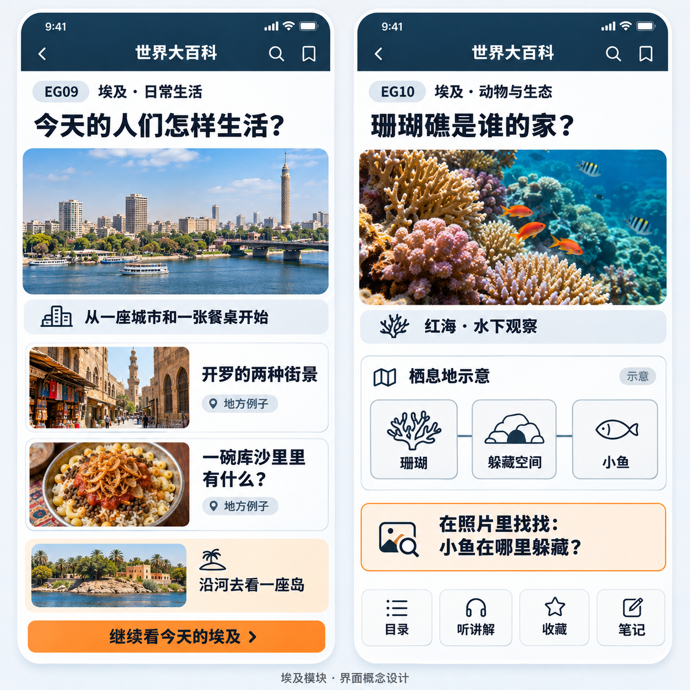
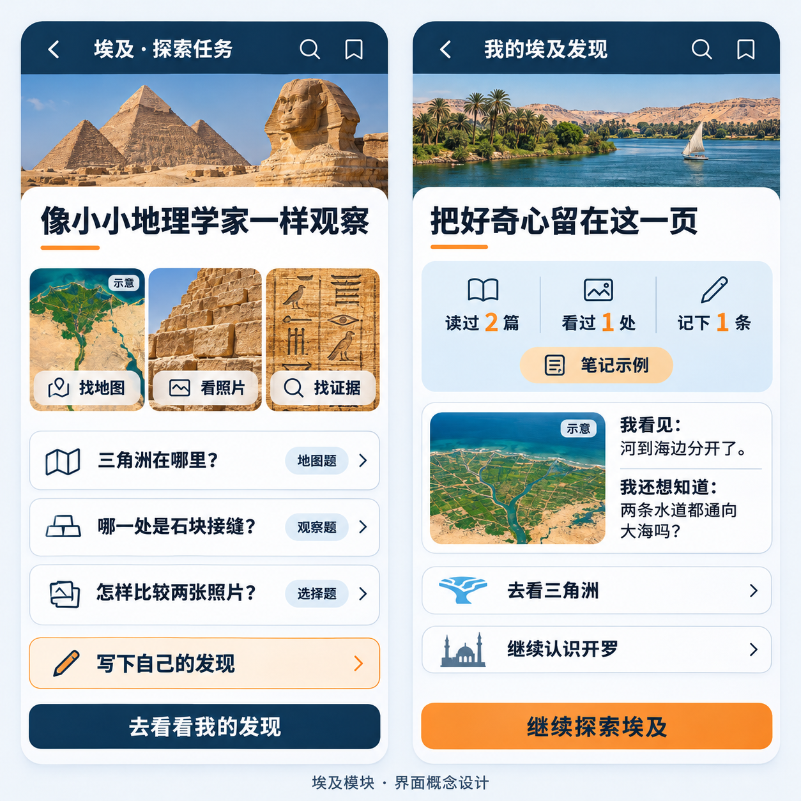
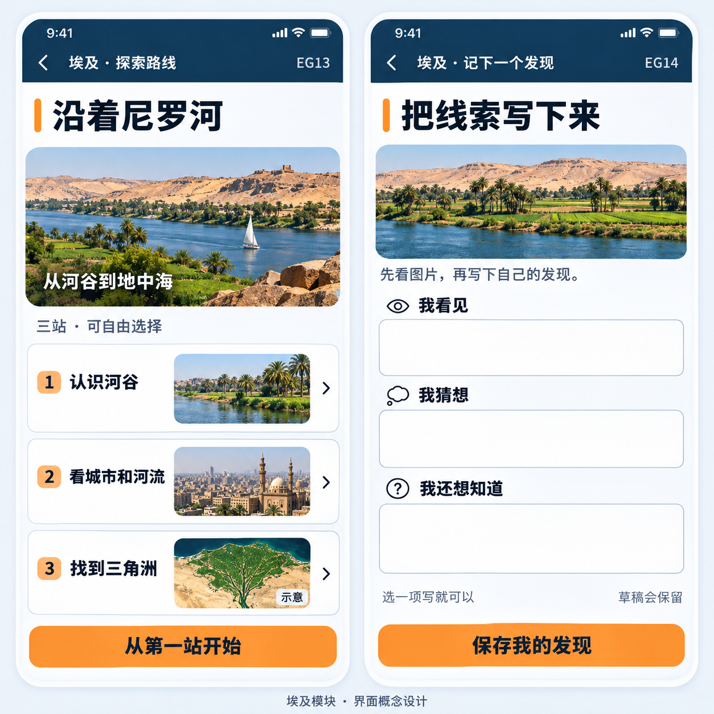

EGYPT · 国家深度百科
从一条河找到方向，在街景、餐桌和古迹里寻找线索，再写下自己的发现。

从任何一站开始，也可以从地图进入。
沿河谷看农田和城市，最后在地中海边找到三角洲。
比较开罗街景、餐桌上的库沙里和象岛上的过河方式。
看石头怎样留下线索，纸莎草怎样被使用，神庙怎样迁到高处。
点击图片放大。各图对应的页面和验收要求见详细设计。
EG01 / EG02
吉萨封面、三条探索主线与十个栏目入口。

EG03 / EG04
同一个三角洲选点，在平板侧栏和手机面板中呈现。

EG05 / EG06
沿北箭头找下游，再到照片里找石块和轮廓。

EG07 / EG08
看留下的证据和年代，再看纸莎草的材料与工序。

EG09 / EG10
用开罗与一碗库沙里认识今天，用珊瑚礁认识海中栖息地。

EG11 / EG12
把选答、照片观察和孩子自己的笔记放在清楚的入口。

EG13 / EG14
三站可自由阅读，开放观察的三个输入框从空白开始。
页面、内容、数据与视觉依据。